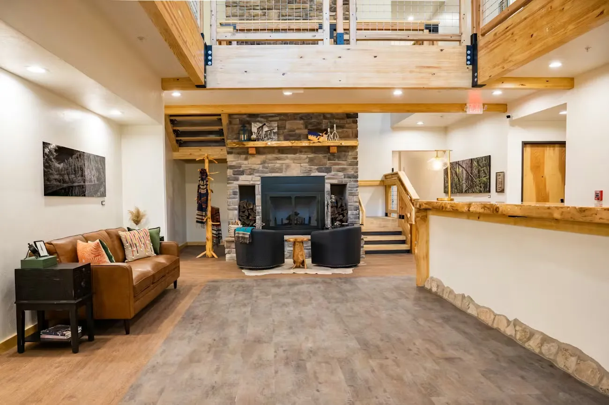

Your Mountain Retreat Awaits
The Grand Cloudcroft Hotel is a 50-room independent hotel on James Canyon Highway in Cloudcroft, New Mexico. Opened on September 15, 2023, it is the newest lodging property in the village and the first purpose-built hotel in Cloudcroft in recent memory. The property was designed, built, and managed locally, positioning itself as an affordable alternative to The Lodge with a modern feel that still reflects the mountain character of Cloudcroft.
Co-owner Jim Maynard handled much of the custom woodwork throughout the property, using white fir — a nod to Cloudcroft's logging heritage. General Manager Julie Bragg, a native Cloudcrofter and former ICU nurse, joined the project in January 2023 and assembled the initial 15-person staff. Local artist displays line the halls throughout the hotel, each with QR codes linking to the artist's portfolio.
As Bragg describes the hotel's positioning: “We are affordable but with the feel of a luxury hotel. It feels modern while evoking a sense of Cloudcroft and its place in the mountains.”

Before You Book
Three things worth knowing about The Grand Cloudcroft Hotel.
Pet-Friendly Rooms
The Grand has 2 designated pet-friendly rooms, making it one of the clearer dog-travel options in Cloudcroft. These rooms book up fast — reserve early if you're bringing a pet.
White Sands Access
Just 15 miles from White Sands National Park, The Grand is one of the closest Cloudcroft hotels to the dunes. Head down the mountain in the morning, explore the gypsum sand, and be back at altitude by dinner.
Public Pool
Indoor year-round pool & hot tub for guests. Public swim every Sunday: 12–2 PM and 2–4 PM. $10 per person, $5 for children under 5. Ages 14 and under require adult supervision.
Everything You Need
Complimentary Breakfast
Hot breakfast 5 mornings per week. Muffins and cereal the other 2. Included for all guests.
24-Hour Front Desk
Our friendly staff is available around the clock for your convenience.
24-Hour Snack Area
Cereals, fresh fruits, yogurt, and juice available anytime day or night.
Indoor Pool & Hot Tub
Year-round indoor pool. Public swim every Sunday — see details above.
Free Parking
Underground (20 cars, 10 motorcycles) plus surface parking. Radiant heated concrete prevents ice.
Free Wi-Fi
Stay connected with high-speed internet throughout the entire hotel.
Aspen Deck
Second-floor deck overlooking James Canyon Hwy with a hot rock fire pit.
Locally Owned
Designed, built, and managed by locals. Custom white fir woodwork by co-owner Jim Maynard.
Visit The Grand
Everything you need to know before booking your mountain hotel stay.
Location
1207 James Canyon Hwy, Cloudcroft, NM 88317. Located on James Canyon Highway, a short drive to Burro Avenue and the heart of downtown Cloudcroft.
Reservations
Phone: (575) 601-2202. Available 24 hours. Book online at grandcloudcroft.com.
White Sands Access
Just 15 miles from White Sands National Park. The Grand is the perfect base camp for exploring this stunning natural wonder and the Sacramento Mountains.
Pet Policy
2 designated pet-friendly rooms — book early. Service animals are welcome in accessible rooms. Contact the hotel directly for current pet policy and fees.
Comparing lodging options? See how The Grand stacks up against The Lodge, cabins, and vacation rentals in our complete guide to Cloudcroft lodging →
Ready for Your Mountain Escape?
Book your stay at The Grand Cloudcroft Hotel and experience the best of the Sacramento Mountains — modern comfort, mountain views, and White Sands just 15 miles away.